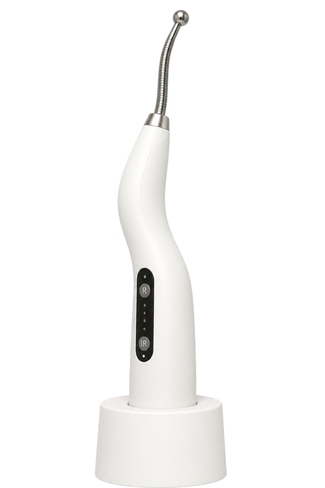

DOR LOMBAR CRÔNICA
Sua lombar
trava?
Quando a dor dura meses, parar tudo nem sempre resolve a conta.
ARRASTA PRO LADO

NÃO É CULPA SUA
Dor persistente não é só posição.
Sensibilidade, sono, rotina e medo de se mover podem alimentar o ciclo.
O CICLO QUE CANSA
O que você percebe
✓ Travar ao levantar
✓ Dor após ficar sentado
✓ Evitar movimentos por receio
✓ Oscilar conforme a rotina
VIRADA IMPORTANTE
Ficar imóvel por dias pode diminuir sua tolerância ao movimento.
O plano busca atividade possível e progressiva, respeitando seus limites.
O exame é parte da conversa, não a resposta inteira.
História, movimento e rotina ajudam a decidir quando uma imagem muda a conduta.
RECURSO COMPLEMENTAR
Onde a fotobiomodulação pode entrar
✓ Plano individualizado
✓ Junto a movimento orientado
✓ Sem substituir investigação clínica

DOR QUE PERSISTE MERECE PLANO
Você não decide isso sozinho.
Salve este guia e comente “LOMBAR” para receber mais conteúdo.
COMENTE “LOMBAR”
LOMBAR
LOMBAR
MOVIMENTO
MOVIMENTO

PLANO
LOMBAR